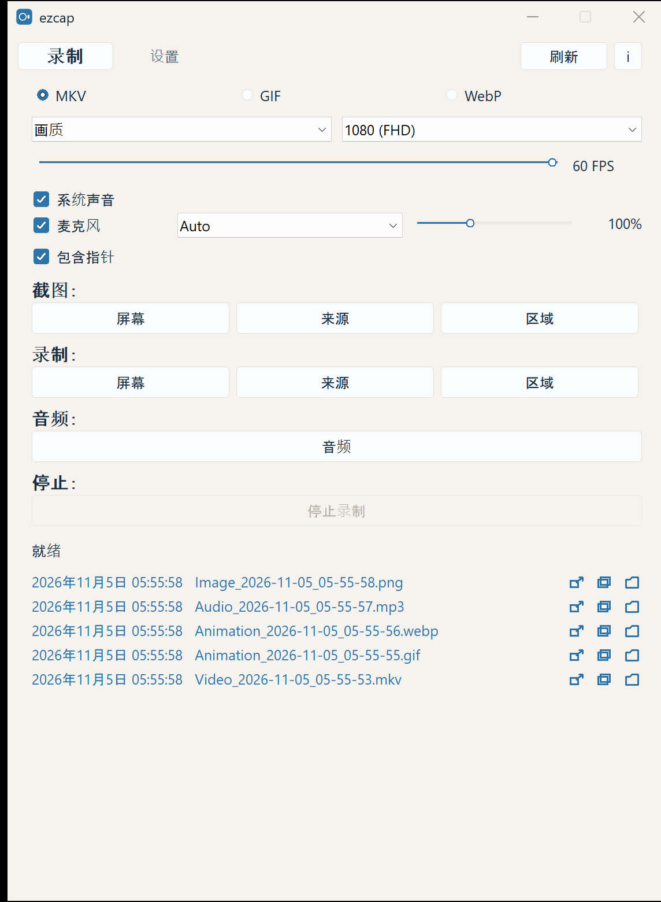
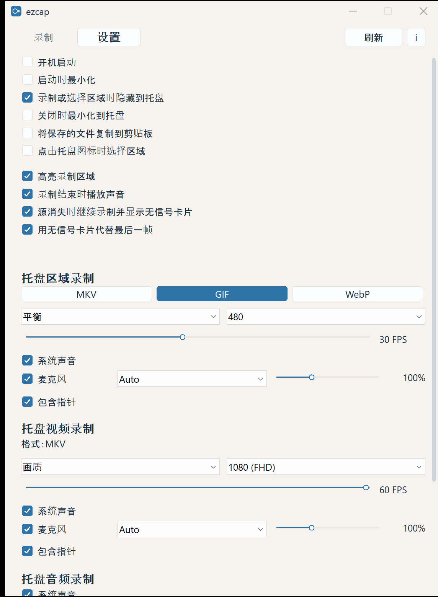

屏幕视频
录制整个屏幕、单个窗口或一个区域。最高 1080p、60 FPS，保存为 MKV。
ezcap 不打扰你：一键录制、区域截图、GIF，声音清晰。 没有臃肿的编辑器。按下按钮，就能拿到文件。
免费 · 源码采用 MIT 许可 · 程序包含 FFmpeg，按 GPL 分发 · 无云端、无账号

不多一点。只有你每天都会用到的工具。
录制整个屏幕、单个窗口或一个区域。最高 1080p、60 FPS，保存为 MKV。
整个屏幕、单个窗口或任意区域。按一下即可保存为 PNG。
为聊天或文章录一段短动画。ezcap 会直接生成 GIF 或 WebP。
系统声音和麦克风一起录，麦克风还能单独增强。只录声音也可以。
选中一块区域后，可以画箭头、加文字或遮挡内容。可保存、复制，也可以直接录制。
它住在托盘里。点一下图标就开始录制。最近的文件可以复制，也可以在文件夹中显示。


Windows 10/11，64 位。两个文件都由源码构建。下面的哈希可以证明文件没有被替换。
为这台电脑上的所有用户正常安装。
ezcap-@@VERSION@@-windows-x64-setup.exe解压压缩包并运行 ezcap.exe。无需安装。
ezcap-@@VERSION@@-windows-x64.zip所有版本、源码和历史记录都在 GitHub ↗
ezcap 源码采用 MIT 许可。 下载的程序包含 FFmpeg 和 x264，因此程序文件本身按 GNU GPL 第 2 版或更高版本分发。 叠加层图标来自 Phosphor Icons， MIT。 zip 与安装目录中包含 COPYING、NOTICE 和 THIRD-PARTY.txt， 列有 FFmpeg、x264、zlib、libwebp、LAME 以及 Rust crate 的许可文本。